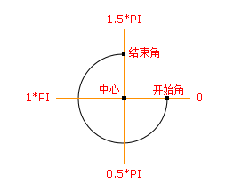

Your browser does not support the canvas element.
Your browser does not support the canvas element.

context.arc(x,y,r,sAngle,eAngle,counterclockwise);
参数
描述
x
圆的中心的 x 坐标。
y
圆的中心的 y 坐标。
r
圆的半径。
sAngle
起始角，以弧度计。（弧的圆形的三点钟位置是 0 度）。
eAngle
结束角，以弧度计。（弧的圆形的三点钟位置是 2*PI 度）。
counterclockwise
可选。规定应该逆时针还是顺时针绘图。False = 顺时针，true = 逆时针。
Your browser does not support the canvas element.